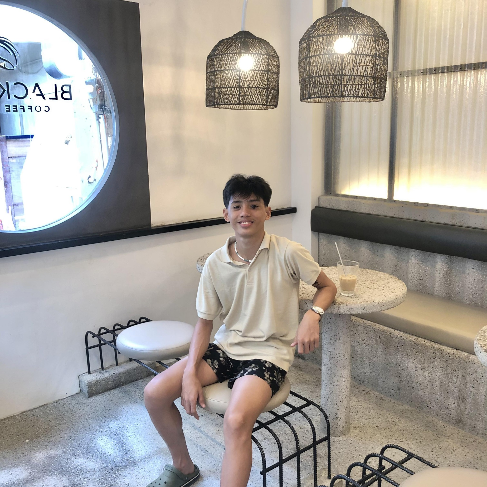

About Me

Hello there! I'm Josh Charles A. Tomada, and I'm thrilled to share a bit about myself with you. I believe that life is an incredible journey, and you only live once so make the most of every moment.
I was born with a curiosity that has fueled my love for learning and exploration. Whether it's delving into the pages of a good book, embarking on a new adventure, or diving into the world of technology, I'm always eager to discover something new.
Professionally, I've found my second passion in BSIT(Bachelor of Information and Technology). I find joy in strugles of coding haha, and I'm constantly striving to grow and excel in my career.
Beyond the professional realm, I'm a firm believer that I would graduate in this profesion. I cherish the relationships I've built with friends and family, and I'm always open to meeting new people and learning from their unique perspectives.
In my free time, you'll often find me hanging out with friends or playing computer games. Whether it's hiking in the great outdoors, experimenting in the kitchen, or simply enjoying a good movie, I appreciate the balance between productivity and relaxation.
Life, to me, is a blend of experiences, and I'm excited to continue writing my story. So, here's to embracing the journey, facing challenges with ups and downs, and celebrating the small victories that make life truly extraordinary. Thanks for taking a moment to get to know me!